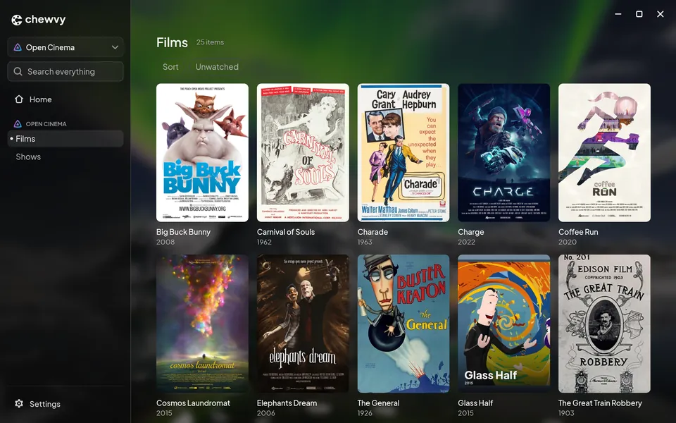

Plex and Jellyfin, together
Sign in to a Plex account and as many Jellyfin servers as you like. One home screen, one sidebar and one search across all of them.
- plex.tv/link code
- Jellyfin Quick Connect
- Username and password
A fast, native player for the media servers you already run. Plex and Jellyfin side by side, true HDR, Watch Together, and every codec mpv can play.
Free and open source, for Linux, Windows and macOS.


Features
Sign in to a Plex account and as many Jellyfin servers as you like. One home screen, one sidebar and one search across all of them.
Watch Together
Join a SyncPlay group on Jellyfin or a Watch Together room on Plex, and everyone stays in step. Friends on Plex's web app can join the same room.
Display
HDR10, HDR10+, HLG and Dolby Vision play in a dedicated HDR window that drives your display in real HDR. On an SDR screen they are tone-mapped.
Native
Written in Rust, with mpv drawing straight into the window. No Electron, no web view, and hardware decoding up to 4K.
Always plays
Player
Audio and subtitle tracks, playback speed, skip intro and credits, next episode, and full screen that stays put. Updates install themselves in one click.
Formats
mpv and FFmpeg do the decoding, in hardware where your graphics card can. If a file still will not play directly, Chewvy has your server remux or transcode it and carries on from the same spot.
Hardware decoding up to 4K for H.264, HEVC, AV1 and VP9, 8 and 10-bit.
Download
Free, on the GitHub release page.
Linux x86_64
curl -fsSL https://raw.githubusercontent.com/Ch3w3y/chewvy/main/install.sh | shInstalls for your user, no root, checksum verified. Ubuntu 24.04, Debian 13, Fedora 40 or newer.
Download the AppImageWindows 10 and 11, x86_64
If SmartScreen asks, choose More info, then Run anyway.
macOS 15 or newer, Apple Silicon
On first launch, allow it under System Settings, Privacy & Security, Open Anyway.
Download the disk imageRust, a C toolchain and libmpv. The build guide covers Debian, Arch, macOS and Windows.